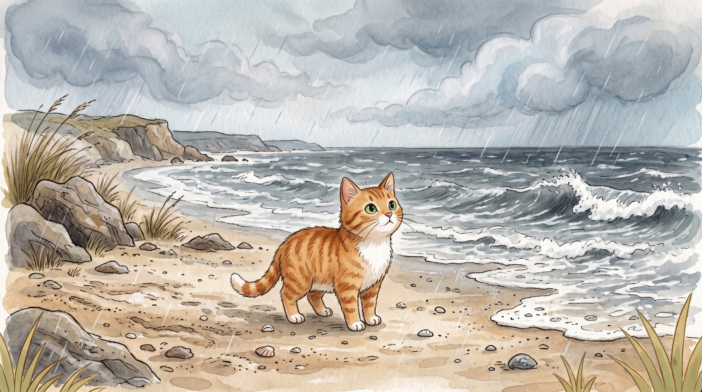

Step 1 · Say the Blend
st
s and t keep both sounds. Slide them together: st, like storm.
🌧️storm
🧍stay
🤫still
Read st blend words. Then read one tiny story with Beach Cat.

s and t keep both sounds. Slide them together: st, like storm.
A storm is at the shore.
Beach Cat can stay.
Beach Cat stands still.
The storm is not big.
The sand is still.
Beach Cat steps back home.
You read st words like storm, stay, and still.
That’s a strong blend.
If it still feels fun, read the story one more time.